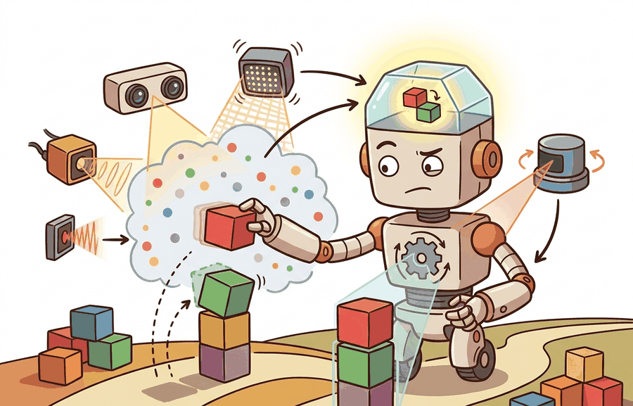

"Color tells you what; depth tells you where. Without the second, the first is a painting."
A Frustrated Grasping Pipeline

This section assumes familiarity with camera intrinsics and the pinhole projection model from section 4.6. The stereo geometry developed here feeds directly into point-cloud construction, which is extended in section 28.2 on 3D perception and neural scene representations. Navigation and obstacle avoidance applications of the resulting depth maps are covered in section 30.1.
A robot arm reaching for a coffee cup sees a single flat image: the cup could be 20 cm away or 2 m away, and the pixels cannot tell. Depth sensors break that ambiguity. Stereo cameras triangulate distance from two viewpoints; structured light and time-of-flight flood the scene with coded light and clock its return; LiDAR times a laser pulse to the millimeter. Each approach exists because no single sensor wins on cost, range, density, and resilience to sunlight at once. Embodied AI is booming precisely because cheap, compact depth hardware now ships in phones and home robots. The material that follows supports choosing the right sensor for a task, deriving metric depth from disparity, and converting a depth image into a 3D point cloud ready for a grasping or navigation pipeline.
Hold one eye shut and try to grab a pen on your desk: the world flattens, your hand overshoots, and you feel exactly the ambiguity a robot faces when a single camera hands it a picture with no distance attached. That missing third number, depth, is what stereo rigs, structured light, time-of-flight, and LiDAR each recover by a different physical trick, and choosing among them is the first design decision in any embodied perception stack.
The key question in Cameras, depth (stereo/structured light/ToF), LiDAR is practical: what must the agent know, what can it observe, what action is available, and what evidence shows that the action worked under the stated conditions?
A representation earns its place when it changes the measurable action interface. In Cameras, depth (stereo/structured light/ToF), LiDAR, the reader should keep asking which decision becomes easier, safer, or more reliable.
Theory
A single RGB camera cannot measure how far away an object is. Every point in the world projects to a single pixel, and infinitely many 3D points share that projection at different depths. Robots that must grasp, navigate, or avoid collisions need metric distance, not just appearance. That is why engineers added depth sensors: stereo rigs recover depth from the geometry of two viewpoints; structured light and time-of-flight emit their own light and measure its return; LiDAR sweeps a laser and times the round trip. A coffee cup at 30 cm and the same cup at 3 m produce identical pixel footprints on a monocular camera, yet the grasping trajectory differs by an order of magnitude; depth breaks the scale ambiguity that makes monocular vision unreliable for contact tasks. Each approach trades cost, range, density, and resilience to ambient light differently, which is what drives the choice of sensor for a given task. Figure 8.2A places a plain camera, a structured-light depth camera, a time-of-flight sensor, and a spinning LiDAR side by side on the same indoor scene so you can compare their range, resolution, and failure modes directly.
A sensor that cannot say how far away an object is can describe the world in perfect color and still send a robot arm into a wall.
Color answers "what"; depth answers "where." A contact task needs both, and only one of them is free from a plain camera.
For Cameras, depth (stereo/structured light/ToF), LiDAR, the practical design rule is to make the interface inspectable before optimization begins: inputs, outputs, units, latency, bounds, and failure labels should all be visible in the saved artifact.
The mechanism in Cameras, depth (stereo/structured light/ToF), LiDAR is the contract between representation and action. Name what enters the module, what leaves it, which assumptions make that transformation valid, and which log would reveal a bad handoff.
Worked Example: Stereo Depth and the Point Cloud
A stereo pair recovers depth from disparity. The same world point projects to slightly different horizontal pixels in the left and right images, and that shift in pixels is the disparity $d$. With baseline $b$ (the distance between the two camera centers) and focal length $f$ in pixels, the depth is
$$z = \frac{b\,f}{d}$$The baseline $b$ is the physical separation between the two camera optical centers, fixed at manufacturing time. In embodied AI this distance is a hard mechanical constraint. A robot hand mounting a stereo rig has a baseline of roughly 5 to 12 cm. That baseline caps useful depth range to about 3 m before disparity uncertainty dominates. You cannot increase baseline without changing hardware, so depth range is not a software parameter. Robots that must navigate beyond arm's reach require LiDAR or monocular depth networks because the body geometry bounds the stereo baseline.
With the baseline fixed by the body, the only remaining input to the depth equation is the disparity itself, and how reliably that disparity can be measured is what separates a clean depth map from a hole-riddled one. To compute disparity, the matcher slides a small patch from the left image along a horizontal strip in the right and picks the offset that minimizes a cost such as sum of absolute differences. Textureless surfaces (a white wall, a bare floor) make every patch look alike; the cost is flat, the matcher returns garbage, and the depth map develops holes. Repeated patterns (brick, grid tile) make several offsets tie, splitting the estimate across candidates and leaving depth noisy.
This relation carries two practical consequences. First, depth resolution degrades with the square of distance. Because $z \propto 1/d$, a one-pixel disparity error produces a depth error that grows like $z^2/(bf)$. Stereo rigs are therefore accurate up close and imprecise far away; a wider baseline extends the usable range. Second, zero disparity corresponds to infinite depth. Textureless or distant regions where the matcher fails produce holes in the depth map. LiDAR sidesteps disparity by timing a laser pulse directly. It delivers near-uniform range accuracy across distance, at the cost of sparser angular sampling and moving parts. The result is counterintuitive. A stereo camera at 10 m may return thousands of depth pixels on a box, yet each pixel carries roughly 10 to 20 cm of range uncertainty. A 16-beam LiDAR may return only a dozen points on that same box, yet each is accurate to within 2 cm. The sensor with far fewer points reads range far more reliably, so outdoor navigation systems discard the dense-but-noisy stereo map and trust the sparse-but-precise laser scan. Once depth per pixel is known, back-projection through the intrinsics turns the depth image into a 3D point cloud.
Think of reading a car's speedometer needle: at low speeds the needle sweeps a wide arc for each increment, so you can easily judge the difference between 20 and 25 km/h. At high speeds the same arc represents a much larger velocity range, so a small tremor in the needle means you might be anywhere from 90 to 110 km/h. Stereo depth works the same way: nearby objects produce large disparities that shift by many pixels per centimeter of real distance, giving precise readings; distant objects produce tiny disparities where a single-pixel wobble in the match corresponds to meters of depth uncertainty. The inverse relationship means that precision is a luxury you spend at close range and cannot recover far away.
# Stereo depth z = b*f/d, then back-project a depth image to a 3D point cloud.
import numpy as np
b = 0.12 # baseline between the two cameras, meters
f = 700.0 # focal length, pixels
cx, cy = 320.0, 240.0 # principal point, pixels
# A tiny 2x3 disparity map (pixels). Larger disparity => nearer surface.
disparity = np.array([[40.0, 35.0, 30.0],
[50.0, 45.0, 20.0]])
H, W = disparity.shape
us, vs = np.meshgrid(np.arange(W), np.arange(H))
z = b * f / disparity # metric depth per pixel
x = (us - cx) * z / f # back-project to the camera frame
y = (vs - cy) * z / f
cloud = np.stack([x, y, z], axis=-1).reshape(-1, 3)
print("depth range (m):", round(z.min(), 3), "to", round(z.max(), 3))
print("first 3 points (m):")
print(np.round(cloud[:3], 3))The fragment should keep modality-specific noise visible: pixel ray, depth sample, point coordinate, timestamp, and confidence. OpenCV and point-cloud tools scale the workflow once the geometry is correct.
Step-Through: stereo disparity to metric depth and back-projection
Trace one pixel through the full pipeline with concrete numbers. Rig: baseline $b = 0.12$ m, focal length $f = 700$ px, principal point $(c_x, c_y) = (320, 240)$ px. The matcher reports disparity $d = 35$ px at image location $(u, v) = (321, 240)$.
Step 1, depth from disparity: $z = b\,f / d = (0.12 \times 700) / 35 = 84 / 35 = 2.40$ m. Step 2, back-project the horizontal coordinate: $x = (u - c_x)\,z / f = (321 - 320) \times 2.40 / 700 = 1 \times 2.40 / 700 = 0.0034$ m. Step 3, back-project the vertical coordinate: $y = (v - c_y)\,z / f = (240 - 240) \times 2.40 / 700 = 0$ m. The 3D point in the camera frame is $(0.0034,\ 0,\ 2.40)$ m. Step 4, perturb the match by one pixel to $d = 36$: $z = 84 / 36 = 2.33$ m, a 7 cm jump for a single-pixel error. Now repeat at $d = 4$: $z = 84 / 4 = 21$ m, and one pixel to $d = 3$ gives $z = 28$ m, a 7 m jump. Same one-pixel error, 100x worse depth uncertainty at range. That is the $z^2/(bf)$ growth made arithmetic.
Practical Recipe
- Choose sensor type before choosing a model: a Franka Panda grasp pipeline at 0.2 to 0.8 m works well with an Intel RealSense D435 (structured light, 30 Hz, 1280x720 depth); a Boston Dynamics Spot navigating outdoors at 2 to 10 m needs a Velodyne VLP-16 or Ouster OS0-32 because structured-light depth washes out in sunlight beyond 3 m.
- Verify calibration before training anything: reproject known checkerboard corners and confirm reprojection error (the pixel distance between a detected corner and where the calibrated model predicts it should land) is below 1 pixel; for a stereo rig with 12 cm baseline, a 1-pixel calibration error at 1 m distance introduces 1.7 mm depth error that compounds at the grasp planner.
- Record and keep missing-depth masks: RealSense D435 silently zero-fills invalid pixels by default; set
decimation_filterandhole_filling_filterexplicitly, and log the fraction of invalid pixels per frame so you can detect window fouling or lighting shifts before they cause grasping failures. - Test with the lighting and surface materials your robot will encounter: time-of-flight (ToF) sensors (Azure Kinect) lose a significant fraction of depth returns on matte black surfaces (manufacturers report 20 to 40% drop in return signal for near-zero-reflectance targets, as of 2024); LiDAR returns can be specular on wet floors, with Velodyne reporting max-range values instead of the actual surface distance.
- Log depth timestamps alongside RGB timestamps: on a ROS 2 system, RealSense RGB and depth frames can arrive up to 33 ms apart at 30 Hz, enough for a robot arm moving at 0.5 m/s to shift by 1.7 cm between the two frames; fuse only when timestamps agree within half a frame period.
A grasp pipeline that achieves 90% success in a static lab scene often degrades to 60% on a moving conveyor or under fluorescent flicker because the depth sensor was never tested under those conditions. On a Franka Panda with an attached D435, a 40 ms pipeline stall caused by USB bandwidth saturation (common when streaming 1280x720 depth at 30 Hz over USB 3.0 alongside RGB) shifts the predicted grasp pose by up to 2 cm at typical joint velocities, enough to miss a 3 cm cylindrical object. Always log sensor latency alongside grasp success rate; the correlation reveals whether perception or control is the binding failure.
The Dexterity and ABB bin-picking cells running RealSense D435 depth over a parts tote log not just final pick success but the per-frame invalid-pixel fraction, the chosen grasp pose, the gripper force feedback, and any retry after a missed grasp. When throughput drops, those logs distinguish a depth-quality problem (invalid-pixel fraction climbing as a reflective metal part rotates into view) from a planning problem (valid depth, but the grasp pose clipping the tote wall). Without the intermediate depth-mask trace, both look identical at the success-rate level, and the team would retrain a grasp network to fix what is actually a sensor-glare failure.
Real-World Application: autonomous driving
Waymo's driverless vehicles fuse spinning LiDAR (long-range Honeycomb and perimeter laser units) with cameras and radar because no single modality is trustworthy alone: the LiDAR supplies centimeter-accurate range that camera stereo cannot match at 100 m, while the cameras supply the dense color and semantic cues (traffic-light state, lane paint) that LiDAR lacks. Sensor selection is an environment decision, which is why the stack keeps both rather than picking one.
For cameras, depth (stereo/structured light/tof), lidar, the useful test is simple: could a teammate point to the log line, plot, or trace that proves the idea changed the agent's next action?
Before reading on, consider: if a phone camera can already estimate metric depth from a single image with no external sensor, what does that imply for the future cost of depth hardware on robots?
Foundation models for metric depth and surface geometry. Monocular metric depth is no longer a special-purpose module: large vision transformers trained on millions of internet images now generalize across sensor types and environments with no fine-tuning. Depth Anything v2 (Yang et al., 2024, arXiv:2406.09414) reaches 70 m range by pairing synthetic pretraining with pseudo-labeled real data on a Vision Transformer Large (ViT-L) backbone, and Metric3D v2 (Hu et al., 2024, TPAMI) separates canonical depth prediction from per-camera projection so the same model handles arbitrary lens configurations without recalibration. The limiting failure mode is still thin surfaces and transparent objects, where training data is systematically absent.
If learned depth removes the need for a dedicated range sensor, a parallel line of work attacks the opposite limit, not what a single frame can infer, but how fast frames can be captured at all. Event cameras and neuromorphic sensing for high-speed embodied perception. Standard frame-based cameras alias at the temporal sampling rate; event cameras (Dynamic Vision Sensors, DVS) report per-pixel brightness changes asynchronously at microsecond resolution, enabling low-latency depth estimation during fast robot motion where rolling shutter and motion blur disable conventional stereo. The Robotics and Perception Group (Davide Scaramuzza, University of Zurich) has demonstrated event-based stereo and odometry pipelines running on edge hardware (see Gehrig et al., 2024, Science Robotics), and Sony released the IMX636 production event sensor in 2024, making this approach accessible outside research labs for the first time.
Neural radiance and Gaussian-splatting representations as real-time sensor fusion substrates. 3D Gaussian Splatting (Kerbl et al., 2023, SIGGRAPH; extended to dynamic scenes by Wu et al., 2024) provides a differentiable scene representation that fuses RGB, depth, and LiDAR observations into a compact explicit model at rendering speeds above 100 fps on a single GPU. Several 2024-2025 robotics groups (including the CMU Robotics Institute and ETH Zurich) are using Gaussian splat maps as live world models that simultaneously support novel-view synthesis for sim-to-real transfer and collision geometry for motion planning, collapsing what were previously two separate pipelines into one maintained representation.
Open problem for PhD research. All three directions above assume that sensor calibration (intrinsics, extrinsics, timestamps) is accurate at deployment. In practice, thermal expansion, mechanical shock, and lens contamination degrade calibration continuously on field robots. An open problem is online, self-supervised joint calibration of heterogeneous sensor suites (RGB, event, depth, LiDAR, IMU) using only the motion signal already available to the state estimator, without requiring fiducial targets or human intervention, and with formal uncertainty bounds that propagate into the downstream planner.
Can you name the observation, state estimate, action, success metric, and most likely failure mode for Cameras, depth (stereo/structured light/ToF), LiDAR? If not, the system boundary is still too vague.
Production Pattern
Cameras, depth (stereo/structured light/ToF), LiDAR sits inside the Part II robotics contract: geometry defines where things are, kinematics defines what motion is possible, dynamics defines what motion costs, control defines how errors are corrected, and sensing defines what the agent can know on time.
Camera, depth, and LiDAR pipelines should carry intrinsics, extrinsics, range limits, and missing-data behavior. The result is useful to builders and researchers alike: the idea has an intuitive role, a formal interface, a runnable check, and a failure mode that can be reproduced.
For Cameras, depth (stereo/structured light/ToF), LiDAR, state estimation converts imperfect observations into a belief usable by control. Preserve calibration, covariance, timestamp, frame, dropout behavior, and latency.
| Tool or Library | What It Handles | Verification Check |
|---|---|---|
| OpenCV | handles camera models, calibration, projection, and vision preprocessing | Verify intrinsics, distortion, image timestamp, and frame-to-camera transform. |
| ROS 2 robot_localization | fuses odometry, IMU, GPS, pose, and twist streams through ROS estimation nodes | Verify covariance, frame IDs, timestamps, and rejected measurement counts. |
| FilterPy | teaches and prototypes Kalman, extended Kalman, unscented, and particle filters | Verify process noise, measurement noise, innovation, and covariance growth. |
| Kalibr | supports practical work on Cameras, depth (stereo/structured light/ToF), LiDAR | Verify the library output against the hand-built baseline on one small case. |
| Open3D | supports practical work on Cameras, depth (stereo/structured light/ToF), LiDAR | Verify the library output against the hand-built baseline on one small case. |
Use this recipe when turning Cameras, depth (stereo/structured light/ToF), LiDAR into code, a simulator experiment, or a robot diagnostic. The point is not to use every library. The point is to keep the hand-built baseline and the maintained-tool path comparable.
- Define each sensor message with units, frame, timestamp source, calibration file, and covariance meaning.
- Run a static test, a slow-motion test, and a dropout test before fusing streams with IMU and wheel odometry.
- Compare the hand filter with FilterPy or ROS 2 robot_localization using identical measurements and noise settings.
- Log innovation, covariance, delayed messages, rejected measurements, and downstream control effect.
- Treat perception output as a belief with uncertainty, not as ground truth handed to the controller.
For Cameras, depth (stereo/structured light/ToF), LiDAR, compare methods only through one saved artifact that preserves the inputs, outputs, units, timestamps, latency budget, configuration, seed, metric definition, and failure labels relevant to this section. The comparison is meaningful only when the same script evaluates the same panel.
Extend the section exercise by adding one perturbation specific to Cameras, depth (stereo/structured light/ToF), LiDAR and one latency or uncertainty check. Save the result in the EvidenceRecord schema, then explain which library output you trust and why.
Vision and depth failures often come from exposure, rolling shutter, stereo texture, ToF multipath, lidar sparsity, reflective surfaces, or occlusion. Reproduce one calibration or range case by hand before retraining a perception model.
Technical Core
Cameras, depth sensors, and LiDAR all turn light into geometry, but they fail for different physical reasons. RGB cameras give dense appearance at low cost, stereo estimates depth from disparity, structured light projects a known pattern, time-of-flight estimates range from travel time, and LiDAR measures range by active scanning. Figure 8.2.T summarizes the chain this section must preserve when moving from a teaching example to a real embodied system.
For a pinhole camera, $u=f_xX/Z+c_x$ and $v=f_yY/Z+c_y$. Stereo depth uses $Z=fB/d$, where $B$ is baseline and $d$ is disparity. These equations explain the practical failure mode: small disparity errors at long range produce large depth errors, so a far obstacle can have a confident-looking pixel location and a weak range estimate.
- Calibrate intrinsics, distortion, and extrinsics (the rigid rotation and translation that place each sensor in a shared reference frame) for every camera or range sensor.
- Measure range error at near, mid, and far distances with matte, shiny, dark, and transparent objects.
- Record missing-depth masks rather than filling holes silently.
- Align RGB, depth, and LiDAR timestamps before projecting points into a shared frame.
- Validate with a known target, then repeat after temperature change or mechanical remounting.
| Sensor Type | Strength | Failure Mode To Diagnose |
|---|---|---|
| RGB camera | Dense texture, color, and semantic cues. | Lighting shifts, motion blur, lens distortion, and scale ambiguity. |
| Stereo depth | Passive depth when texture and baseline are adequate. | Low texture, repeated patterns, reflective surfaces, and long-range disparity noise. |
| Structured light | Good short-range geometry for manipulation and inspection. | Sunlight, transparent objects, interference, and limited working distance. |
| Time-of-flight | Compact active depth with direct range measurement. | Multipath reflections, flying pixels near edges, ambient light, and mixed pixels. |
| LiDAR | Accurate range over larger spaces and outdoor navigation. | Sparse vertical resolution, rolling scan distortion, specular returns, and calibration drift. |
A common assumption is that active depth sensors (structured light, ToF) and even LiDAR work reliably in any environment, since they emit their own light and do not depend on scene illumination. This is wrong in embodied AI: structured light and ToF sensors flood the scene with infrared, but sunlight contains far more infrared energy than any onboard emitter, effectively drowning the return signal outdoors or near windows. An Intel RealSense D435 or Azure Kinect will lose most or all depth returns in direct sunlight beyond 1 to 2 m. The correct mental model is that active sensors own their lighting budget only indoors; outdoor or high-ambient-light deployments require LiDAR (which uses a focused, pulsed beam and narrow-band filtering to reject ambient light) or monocular/stereo passive methods. Sensor selection is therefore an environment decision, not just a range or resolution decision.
Expected output is a range error table and a missing-data mask, not only a pretty point cloud. The mask matters because planners fail differently when an obstacle is measured as far away versus not measured at all.
Structured light (used in the Intel RealSense D415 and the original Microsoft Kinect) projects a known infrared pattern (dots, stripes, or a pseudo-random grid) onto the scene, then captures it with a second sensor offset from the projector. Because the pattern is known, any deformation or shift in the captured image can be matched against the reference, producing disparity and therefore depth without requiring natural texture in the scene. The working range is roughly 0.2 m to 3 m indoors; sunlight overwhelms the projected pattern outdoors. Time-of-flight sensors (used in the Azure Kinect and many smartphone rear cameras) instead modulate an infrared LED and measure the phase delay between the emitted and returned signal; phase shift maps directly to round-trip travel time and therefore to range. ToF is compact and works at video frame rates, but multipath reflections (where light bounces off multiple surfaces before returning) corrupt range near corners and shiny floors, and mixed pixels at depth discontinuities report the average of two surfaces rather than either one.
When using an Intel RealSense D4xx or Azure Kinect, enable the built-in confidence or validity mask before consuming depth values: for RealSense, set rs2_option::RS2_OPTION_FILTER_MAGNITUDE on the spatial filter and check the confidence channel; for Azure Kinect, use K4A_IMAGE_FORMAT_DEPTH16 paired with the K4A_CAPTURE_DEPTH_IMAGE confidence image and discard pixels with confidence below 1. Flying pixels (mixed-depth samples at object edges where the emitter illuminates one surface while the detector sees another) consistently appear at depth discontinuities and are invisible in a raw point-cloud render but will cause a grasp planner or collision checker to see phantom obstacles or free-space holes. Applying Open3D's remove_statistical_outlier with nb_neighbors=20 and std_ratio=2.0 as a post-processing step catches most remaining outliers without eroding genuine surface detail near edges.
A depth pipeline fails when it treats invalid pixels as free space, projects points through stale extrinsics, or compares RGB and range streams with mismatched timestamps.
Section References
Core references for Cameras, depth (stereo/structured light/ToF), LiDAR: Modern Robotics; Murray, Li, and Sastry; Siciliano et al.; LaValle; and official documentation for Drake, MuJoCo, Pinocchio, CasADi, python-control, GTSAM, ROS 2, and OpenCV as applicable.
Use these references to check notation, frame conventions, units, solver assumptions, and maintained-library behavior.
Yang, L. et al. (2024). Depth Anything V2. arXiv. https://arxiv.org/abs/2406.09414
Scales monocular metric depth to 70 m using a ViT-L backbone and improved pseudo-label training. Read to understand how backbone scale and synthetic data quality jointly determine metric accuracy for outdoor robotic ranges.
Hu, W. et al. (2024). Metric3D v2: A Versatile Monocular Geometric Foundation Model for Zero-Shot Metric Depth and Surface Normal Estimation. arXiv. https://arxiv.org/abs/2404.15506
Achieves zero-shot metric depth across arbitrary camera intrinsics by separating canonical depth prediction from camera-specific projection. Read alongside the calibration material in this section to understand when metric depth can substitute for a hardware depth sensor.
Cameras, depth (stereo/structured light/ToF), LiDAR is useful when it makes the perception-action loop more reliable, not when it merely adds a more impressive model name.
Design a method-matched experiment for Cameras, depth (stereo/structured light/ToF), LiDAR. Specify the environment, observations, actions, metric, one perturbation, and the library output you would compare against the hand-built baseline.
Project Ideas
Beginner (weekend): Stereo depth visualizer in PyBullet. Build a PyBullet scene with a tabletop object and two virtual cameras at a fixed baseline, then compute disparity and back-project a colored point cloud using the formula in this section. The key challenge is converting PyBullet's depth buffer (which returns normalized values) into metric depth using the near/far clip planes, and verifying the result against the known object position in simulation.
Intermediate (1-2 weeks): ROS 2 sensor-selection benchmark. Set up a ROS 2 workspace that streams simulated Intel RealSense and Velodyne VLP-16 data from a Gazebo scene containing both indoor and outdoor lighting zones, then write a node that logs missing-depth mask fraction, range error against ground truth, and latency per frame for both sensors. The key challenge is time-aligning the two sensor streams at the ROS 2 message level and building a single artifact that makes the trade-off between sensor types visible across lighting conditions.
Intermediate (1-2 weeks): Grasp-pose sensitivity to depth noise in MuJoCo. Using MuJoCo with a Franka Panda model and the LeRobot grasp policy interface, inject calibrated Gaussian noise into the simulated depth image at increasing magnitudes and measure how grasp success rate degrades as a function of noise standard deviation. The key challenge is isolating depth noise from other failure sources by holding the control policy fixed and varying only the sensor noise model.
Lab: watch depth uncertainty grow with distance
Goal: measure empirically how stereo depth error scales with range, and confirm the $z^2/(bf)$ prediction from this section. Tools needed: Python with OpenCV (pip install opencv-python numpy) and the built-in Middlebury or any rectified stereo pair, or generate synthetic pairs with PyBullet's two-camera setup. Time: 15 to 30 minutes.
Procedure: Load a rectified stereo pair (two images warped so that matching points lie on the same image row, which lets the matcher search along a single horizontal line) and compute disparity with cv2.StereoSGBM_create (semi-global block matching). Convert to depth via $z = bf/d$ using the dataset's published baseline and focal length. What to vary: add or subtract one pixel from the disparity map (d_perturbed = d + 1) to simulate a single-pixel matching error, and recompute depth. What to observe: bin pixels by true depth and plot the depth error from the one-pixel perturbation against distance. You should see error rising quadratically, near-flat under 1 m and exploding past 5 m. Then mask textureless regions (low local variance) and confirm those are exactly where the matcher returns invalid or wildly wrong disparity, reproducing the depth-hole failure mode discussed above.